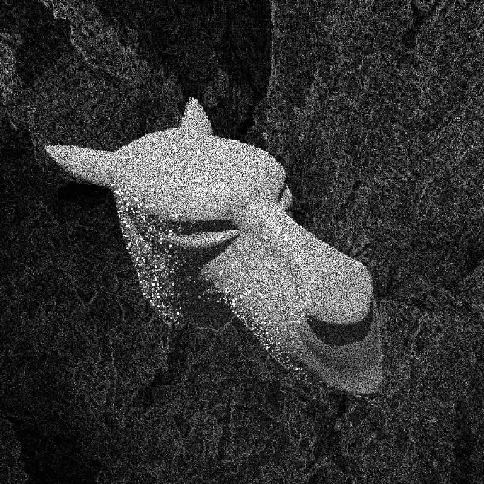

51 millions samples
The following two images are both rendered as long as the total sample count stays below 51 million. It can be seen, that for example on the left cheek of the camel, the independent sampler has not done a good job until now. The adaptive sampler, which distributes it's samples according to the variance, has (with the same amount of samples) done a much better job. The runtimes are 15s for independent sampling and 42.7s for adaptive sampling. The increase in runtime is because of the needed computation for the variance (which has to be done many times).

Count of Samples
This comparison shows the rendered image in constrast to the amount a certain block was sampled. Darker tiles were less sampled, whiter tiles are more sampled.
Variance
This next comparison shows the rendered image in constrast to the variance of the image. This plot helps to see at a glance, that the variance computation makes sense and the implementation should be correct.

Simple Render - Simple Uniform Background
If we get rid of a detailed environment map, the amount the blocks are sampled is much clearer to see. As one can clearly see from this image, the adaptive sampler does not loose any not needed time on the (uniform) background (which was some sort of gray). Nearly all samples are placed on the model in the foreground.